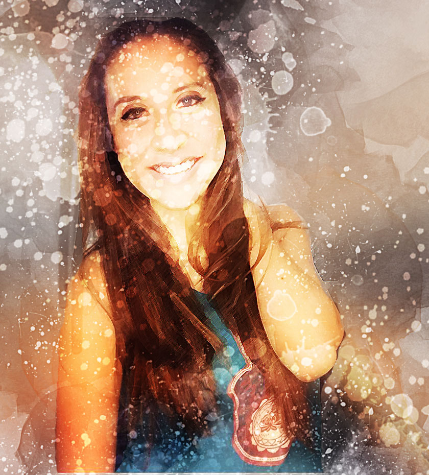

About me

A highly personable, self driven, motivated and conscientious designer with years of gold standard experience and vast knowledge of logo creation, Adobe InDesign, Adobe photoshop, Web & Multimedia, HTML, and creative coding exhibiting impeccable skills in project leadership, branding and team management.
Expert proficiency in creating design strategies and interactive processes with demonstrated ability to interact and communicate effectively with clients and colleagues, successfully implements systems and processes that enhances employee’s performances even in the absence of a supervisor and also, displays an immense passion towards project completion.